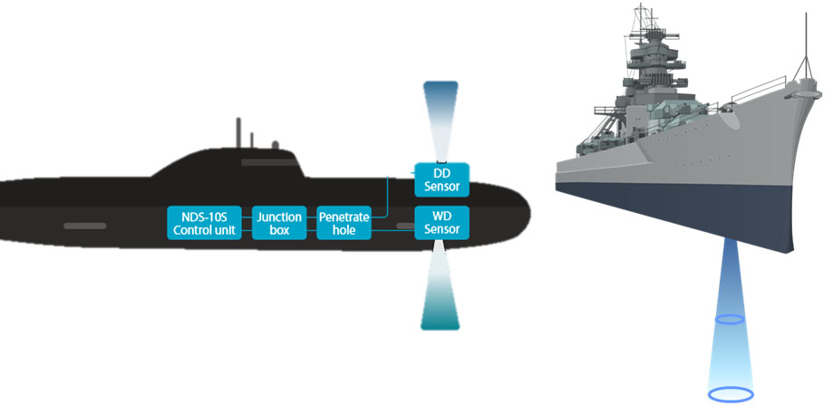
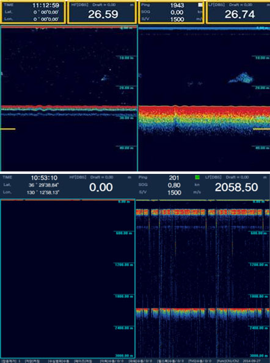

Naval Depth Sounder measures water depth and diving depth by using a sophisticated depth finding algorithm and displays the result on the operator console.
Applications
Navy, Coast Guard and other surveying vessels especially for surface combat vessels and submarines in Navy
Key Features
Military Specification applied, Maximum depth of 10,000m

